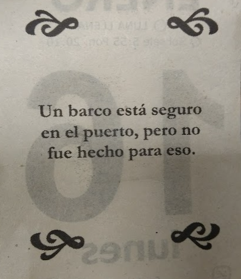

No sé hacer una carta de presentación.
(Pero sí sé HTML y CSS.)
En mi camino a perfeccionarme en Back-End, me crucé con EasyBroker.
Sobre mí
Mi nombre es Jeremías Ramirez.
Nací en Mar del Plata,
Argentina, pero vivo en la provincia de Córdoba.
La primera vez que toque una página web, casi sin saber que estaba
haciendo, tenía 15 años. Ahora con casi 28, el mundo web
cambió más de lo que jamás hubiese imaginado.
Si alguien me hubiera dicho en el 2012, que siguiera estudiando
desarrollo web, la historia sería otra, pero por desgracia lo dejé
de lado durante mucho tiempo.
Nunca del todo, ya que siempre hubo
alguna ayuda a algún amigo o un E-commerce prefabricado para algún
emprendimiento familiar, pero nada realmente serio.
Hace dos años aproximadamente, decidí que era momento de
hacerlo serio.
Después de mucho tiempo en mi empresa actual, sentí
que era momento de despegar y hacer lo que amo y lo que tendría
que haber hecho siempre, Programar.
Desde la escuela secundaria hasta hoy, programé en Assembler, C,
PHP, Python, JavaScript, hasta que conocí Ruby.
Nunca incursione demasiado en los demás lenguajes, aprendí lo necesario.
Ruby fue diferente, y lo elegí para seguir mi carrera
de desarrollo web con el.
Siendo honesto, no tengo grandes proyectos para presentarles.
Tuve la suerte de que cuando me sentía cómodo con lo que
ya sabía acerca
de Ruby On Rails, aparecieran algunos trabajos Freelance donde
aprendí muchísimo en las pequeñas tareas que se me
pidieron.
Cuando termine con estos proyectos, pude aplicar a la Aceleración de Alkemy.org,
desde donde me presentaron la búsqueda de perfiles RoR en
EasyBroker y me sugirieron que aplicara.
Y la verdad, que no me esperaba algo así.
Me encontré con una empresa que plantea Calidad ante todo. Si hay
que retrasar una entrega, que se atrase. Pero el producto sale perfecto.
O lo más parecido a perfecto que se pueda.
Y me encantó.
Poder participar
en proyectos donde se valoren las guías de estilo, los estándares,
la calidad en si misma, me atrapó. Y que sean capaces de poder decidir
sobre su productos al ser una empresa independiente, lo hace mejor
todavía.
Es difícil encontrar el equilibrio entre querer un producto exquisito
y cumplir con las entregas lo mejor posible, y parece que ustedes
dieron en la tecla.
En mi cabeza planeé terminar la Aceleración en Alkemy antes de aplicar a algún
puesto, pero después de leer sobre ustedes y su forma de trabajar,
creo que vale la pena el riesgo.
Si llegaron hasta aca leyendo, pensarán, ¿Riesgo de qué?
Bueno, hace casi una década que estoy en mi empleo actual, disfruto lo que
hago, la relación es excelente y el ambiente súper amigable.
Y estoy
dispuesto a apostar todo eso por aprender más y más sobre Rails, el
mundo del desarrollo web, y todo lo que sea necesario aprender para
entender este fantástico rubro que nos atrae.
Si ustedes confían en mí, en que voy a darlo todo para formar parte
de su equipo, no se van a arrepentir. Sé que tengo mucho por aprender,
y esa sed de conocimiento es lo que me incita a buscar nuevos
horizontes.
Si me brindan la oportunidad de desarrollar codo a codo con ustedes
en sus proyectos, yo voy a confiar en ustedes y dar todo por el equipo.
Para cerrar, quiero compartirles una cita que a diario, me recuerda
que hay demasiado por aprender allá afuera como para no salir.
"Un barco está seguro en el puerto, pero no fue hecho para eso."
Contacto
Si este sencillo texto les fue de agrado, espero quieran contactarme:
E-mail: ramirez.jeremias.94(at)gmail(dot)com.